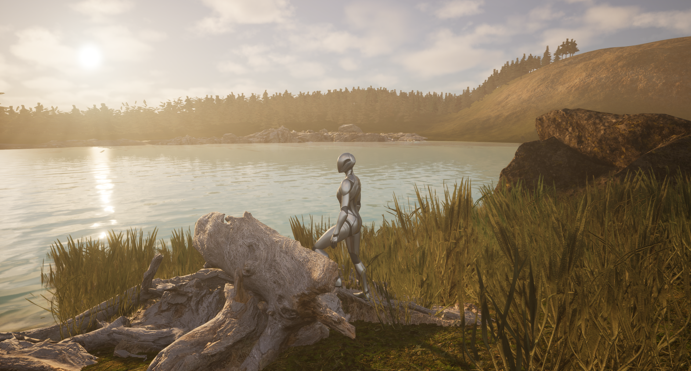

Pelit ja pelillisyys
Oma interaktiivinen pelimaailma Unreal Enginessä
Kurssin lopputyössä suunnittelin ja toteutin kokonaisen pelimaailman Unreal Engine -ympäristöön. Tavoitteena oli yhdistää aiemmissa harjoituksissa opitut taidot ja luoda visuaalisesti toimiva, interaktiivinen ympäristö, jossa pelaaja voi liikkua ja nauttia maisemasta.

Tehtävän keskeiset osa-alueet:
- Oma maasto: Rakensin maaston täysin itse muokaten Terresculpt-työkalulla ja välttäen kurssin valmiita korkeuskarttoja.
- Monipuolinen foliage: Käytin useita eri kasvi- ja luonnonelementtejä, kuten puita, ruohikkoa ja kiviröykkiöitä, maiseman rikastamiseksi ja elävöittämiseksi.
- Materiaalit ja teksturointi: Hyödynsin useampaa erilaista materiaalia, jotka sulautuvat toisiinsa luoden yhtenäisen ja realistisen ilmeen.
- Selkeä kulkuväylä: Suunnittelin reitin, jota pitkin pelaaja voi liikkua ja ihailla maisemia. Reitti erottuu ympäristöstä selkeästi, mutta sulautuu luontevasti maisemaan.
- Vesielementti: Pelimaailmassa on järvi, joka lisää tunnelmaa ja luonnollisuutta.
- Rakennus ja sisustus: Lisäsin pelimaailmaan rakennuksen, jonka sisustin ja materialisoin huolella. Käytin kurssilla annettua messutaloa.
- Valaistus ja äänimaailma: Valaistus suunniteltiin sopivaksi ympäristöön, ja lisäsin taustamusiikin parantamaan tunnelmaa.
Tekniset haasteet ja opit:
Loin pelimaailmaan runsaasti puita ja muuta kasvillisuutta, mikä toi visuaalista runsautta ja luonnollisuutta. Huomasin kuitenkin, että liiallinen foliage kuormittaa grafiikkaa ja heikentää pelin suorituskykyä, joten jouduin tekemään kompromisseja optimaalisen suorituskyvyn ja visuaalisen laadun välillä. Tämä opetti minulle resurssien hallinnan merkityksen ja tasapainon löytämisen grafiikan ja toimivuuden välillä.
Opettajan palaute